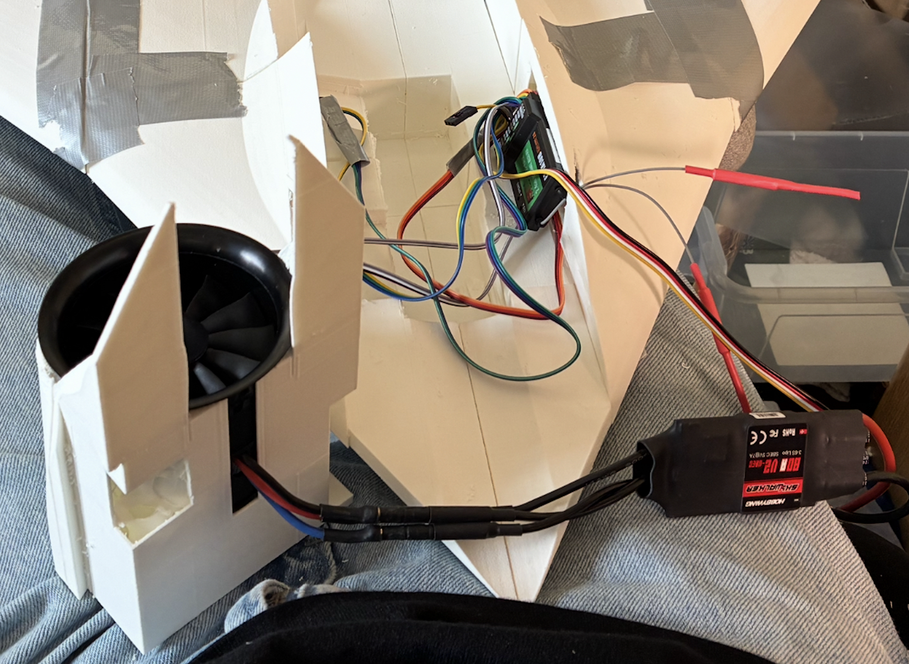
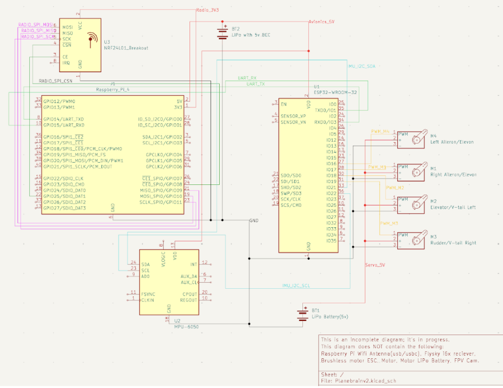
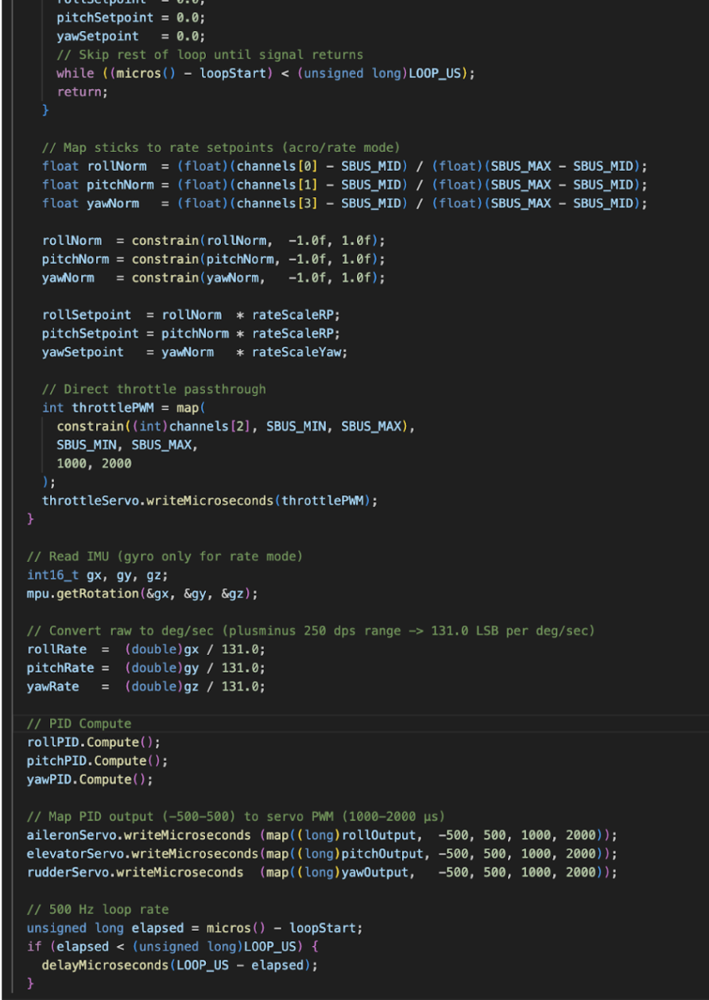
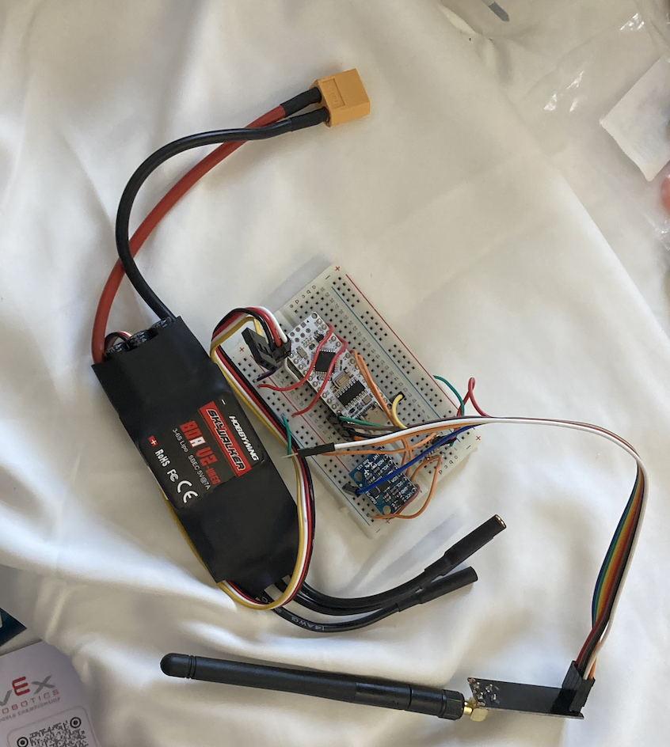

Hardware Development
Electronics & PCB Design

Physical Build & First Flight
Built and integrated the avionics dev board stack onto a flying-wing airframe, routing wiring for robustness and ensuring vibration resistance suitable for airborne operation. The system successfully flew, validating both the hardware and control software end-to-end. Thermal management was considered throughout for operation in hot climates, such as that of Hong Kong.

Schematic & PCB Design
Designed the avionics schematics in KiCad, covering power regulation, sensor integration, and communication buses. Currently migrating to Altium Designer to produce a custom PCB, consolidating the dev board stack into a single integrated design with a focus on signal integrity, clean power distribution, and minimized noise coupling.

Assembly & Testing
Hand-assembled prototype boards and validated functionality through multimeter probing, oscilloscope checks, and subsystem-level testing of sensors and communication buses. Each component was characterized before full system integration and flight.
Software Development
Control Algorithms & Flight Software

Basic Attitude Hold Algorithm
Developed a stabilization algorithm for the flying-wing UAV to counter Dutch roll, using IMU feedback and closed-loop control to improve directional and roll stability. The algorithm prioritizes robustness over computational complexity, and was validated in flight.

In-Progress Flight Controller
Currently developing a full-featured flight control system including sensor fusion, state estimation, control loops, and telemetry handling for autonomous operation. The system is designed to be modular and extensible for future improvements.
System Overview
Modular
Expandable Architecture
IMU-Based
Sensor Fusion
Real-Time
Control Loops